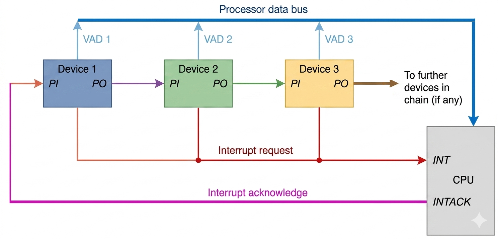
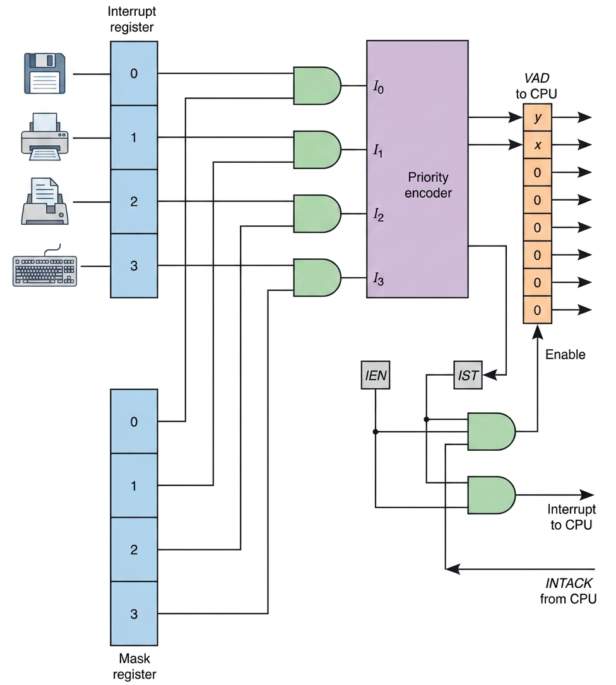
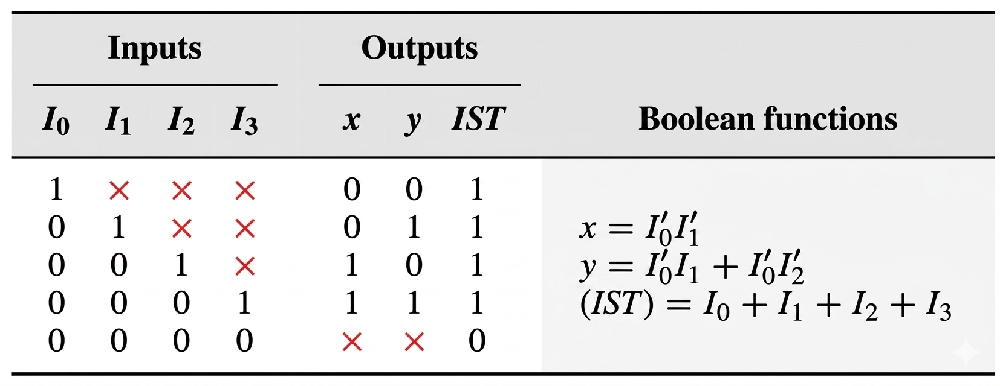
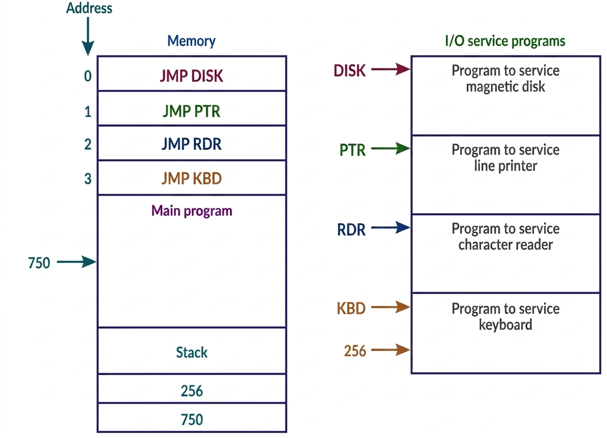

A Priority Interrupt System is a mechanism that determines which I/O device receives CPU service when multiple devices request attention simultaneously. This ensures critical operations are handled first, maintaining system efficiency and responsiveness.
🔑 Key Concept
When multiple I/O devices compete for CPU attention, the priority interrupt structure automatically selects and services the highest-priority device first, ensuring critical operations aren't delayed by less important tasks.
📚 Section Structure
Topic
Key Features
Description
Daisy-Chaining Priority
Serial priority, simple hardware, fixed priority, propagation delay
Serial priority structure based on physical device position
Parallel Priority Interrupt
Fast response, simultaneous checking, complex hardware, no delay
Register-based priority checking for faster access
Save registers, disable interrupts, restore state, enable interrupts
Setup and restoration procedures
🔧 Hardware Priority Techniques
1️⃣ Daisy-Chaining Priority
Concept: Devices are connected in a serial chain where priority is determined by physical proximity to the processor.
Advantage: Simple hardware implementation
Disadvantage: Device closest to CPU always has highest priority

💡 How it works: When an interrupt occurs, the signal propagates through the chain. The first device in the chain that needs service captures the signal and prevents it from reaching devices further down the chain.
Request: A device sends an interrupt request on a common line shared by all devices, lowering its signal to notify the CPU.
Acknowledge: The CPU responds with an interrupt acknowledge signal that goes first to the highest-priority device at the beginning of the chain.
Check Priority: If that device is not making a request, it passes the acknowledge signal to the next device. If it is requesting an interrupt, it stops the signal from going further by setting its priority output to 0
Identify and Service: The device that receives the acknowledge (a 1 at its input) but has also made a request knows it is the highest-priority device needing service. It blocks the signal and puts its interrupt vector address (VAD) on the data bus, allowing the CPU to begin the correct interrupt service routine.
2️⃣ Parallel Priority Interrupt
Concept: Uses a register whose status bits are constantly monitored to determine which interrupt to service.
Advantage: Faster access and more flexible priority assignment
Advantage: Can dynamically change priorities

💡 How it works: A parallel priority interrupt system manages multiple hardware requests simultaneously through a structured logic flow:
Interrupt Masking: The Interrupt Register captures requests from devices like disks or printers, which are then passed through AND gates along with the Mask Register to enable or disable specific sources.
Priority Encoding: The Priority Encoder receives these signals and identifies the highest-priority request (e.g., the Disk is highest priority) while ignoring lower ones.
CPU Signaling: If an unmasked interrupt exists, the IST (Interrupt Status) and IEN (Interrupt Enable) flip-flops activate a common signal to the CPU.
Vector Address Generation: Upon receiving an INTACK (Acknowledge) signal from the CPU, the system enables the Vector Address (VAD) to be placed on the data bus, directing the CPU to the correct service routine.
3️⃣ Priority Encoder
Function: A specialized combinatorial circuit that converts multiple input lines into an n-bit binary code representing the highest priority active input.
Input Lines: 2^n (or fewer)
Output Code: n-bit binary number
Output represents: Highest priority active input
Example: An 4-to-2 priority encoder takes 4 input lines and produces a 2-bit code (00 to 11) indicating which input has the highest priority.

Comparison
Feature
Daisy-Chain
Parallel
Speed
Slower (serial propagation)
Faster (simultaneous checking)
Flexibility
Fixed by hardware position
Programmable priorities
Complexity
Simple
More complex
Cost
Lower
Higher
🔄 Interrupt Cycle
Based on the provided text, the interrupt cycle is triggered only when both the Interrupt Enable (IEN) flip-flop and the Interrupt Signal (IST) are set to 1.The CPU executes the following steps to pause the current program and switch to the interrupt service routine:
Interrupt Processing Steps
1Save Return Address:
The Stack Pointer (SP) is decremented, and the current Program Counter (PC) value is pushed onto the stack.
2Acknowledge Interrupt:
The INTACK signal is enabled to notify the hardware that the interrupt is being processed.
3Vector Transfer:
he interrupt vector address (VAD) is loaded into the PC to point to the new instruction sequence.
4Disable Interrupts:
The IEN flip-flop is cleared (0) to prevent further interrupts during the start of the service routine.
5Fetch:
The CPU enters the next fetch phase to execute the instruction at the new address.
Microoperations
Here are the specific micro-operations performed during the interrupt cycle, in order:
SP ← SP - 1
M[SP] ← PC
INTACK ← 1
PC ← VAD
IEN ← 0
Goto next instruction
⚠️ Important: The most critical takeaway is that the IEN bit acts as a master switch, allowing the CPU to ignore interrupt requests unless the programmer has explicitly enabled them and the hardware has cleared them to prevent nesting.
💻 Software Handling

Software Routine Tasks
After hardware directs the CPU to the correct service routine, software must handle the actual interrupt processing:
1. The Vector Jump Table
The memory locations 0-3 act as a "jump table." Each location is assigned to a specific hardware device. When an interrupt occurs, the hardware provides the vector address, and the CPU executes the instruction found there. It redirect the CPU from the fixed vector address to the actual memory location of the service program.
0: JMP DISK (Jump to Disk Service Routine)
1: JMP PTR (Jump to Printer Service Routine)
2: JMP RDR (Jump to Reader Service Routine)
3: JMP KBD (Jump to Keyboard Service Routine)
...
2. The Interrupt Cycle (Hardware/Software Interface)
Before a software routine begins, the hardware initiates an "Interrupt Cycle." While this is hardware-driven, the software must be designed to accommodate the resulting state of the Stack and Program Counter (PC).
SP ← SP - 1
M[SP] ← PC ; Store return address
PC ← VAD ; Load Vector address from bus
3. Interrupt Service Routine (ISR) Tasks
Each service program (DISK, KBD, etc.) follows a specific logic flow to ensure data is processed and the CPU can safely return to previous tasks.
Context Saving (Prologue): If the ISR uses CPU registers (like an Accumulator), the software must save their current values so the main program isn't corrupted.
PUSH AC ; Save Accumulator to Stack
PUSH STATUS ; Save Status Register
Device Servicing: The core logic specific to the hardware device (e.g., reading a character from the keyboard or moving a disk head). Example (KBD Routine):
INP ; Input character from keyboard buffer
STA CHAR_VAR ; Store it in a memory variable
Context Restoration & Return (Epilogue): The routine must restore the registers and perform a "Return from Interrupt" (RETI).
PC ← M[SP]
SP ← SP + 1
4. Handling Nested Interrupts
The text illustrates a scenario where a DISK (high priority) interrupts the KBD (low priority) routine.
Trace of the Stack during Nesting:
Main Program is at address 749.
KBD Interrupt occurs: Stack pushes 750. PC moves to KBD routine.
DISK Interrupt occurs while at KBD address 255: Stack pushes 256. PC moves to DISK routine.
DISK finishes: Pops 256 into PC. CPU resumes KBD routine.
KBD finishes: Pops 750 into PC. CPU resumes Main Program.
Initial and Final Operations
📍 Initial Operations (The Prologue)
1Priority Mask Configuration
Disable the mask register bits for the current device and all lower-priority devices. This prevents a less important device from interrupting the current routine.
2Clear Interrupt Status Bit (IST)
Reset the status bit so the hardware is ready to latch and recognize a new, higher-priority interrupt request.
3Save Processor Registers
Push the contents of the Accumulator (AC), Status Register, and any other working registers onto the stack to prevent data loss.
4Set Interrupt Enable Bit (IEN)
Explicitly set IEN to 1. Since the hardware clears IEN during the interrupt cycle, this step "re-opens the door" for higher-priority devices to interrupt this ISR.
🏁 Final Operations (The Epilogue)
1Clear Interrupt Enable Bit (IEN)
Disable interrupts temporarily. This ensures that the restoration of registers and the return address (Steps 2–5) happens atomically without being interrupted.
2Restore Processor Registers
Pop the saved values from the stack back into the processor registers (AC, etc.).
3Clear Device Interrupt Register Bit
Clear the specific bit in the interrupt register belonging to the source that was just serviced so it doesn't immediately trigger another interrupt.
4Set Lower-Level Mask Bits
Re-enable the bits in the mask register for lower-priority devices, allowing them to request interrupts again.
5Restore PC and Set IEN
Pop the return address from the stack into the Program Counter (PC) and set IEN to 1 to resume normal operation.
📋 Important Note:
For nesting to work, the software routine must usually re-enable interrupts (Set Interrupt Enable bit) early in its execution, otherwise, the hardware will block all subsequent interrupts until a return is executed.
🎮 Interactive Priority Interrupt Demo
Click on devices to simulate interrupt requests and see how the priority system handles them!
Devices (Click to Request Interrupt)
P1
Disk Controller
Highest Priority - Critical disk operations
P2
Network Interface
High Priority - Time-sensitive network packets
P3
Keyboard
Medium Priority - User input
P4
Printer
Low Priority - Non-critical output
> System ready. Click devices to request interrupts...
> IEN = 1 (Interrupts Enabled)
📊 Demo Statistics
Total Interrupts Requested:0 Interrupts Processed:0 Pending Interrupts:0